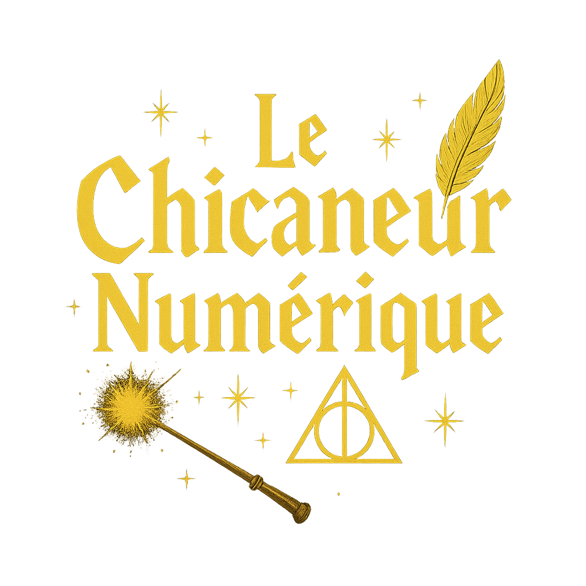
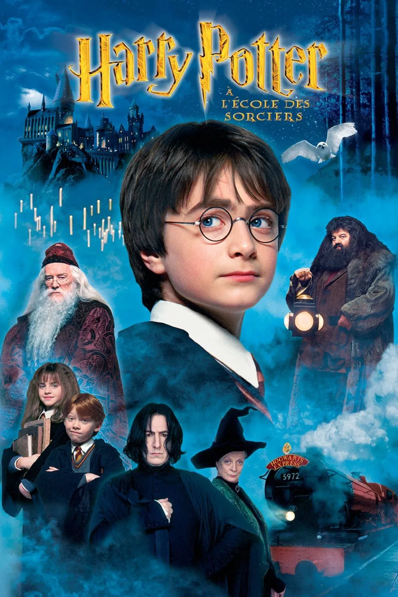
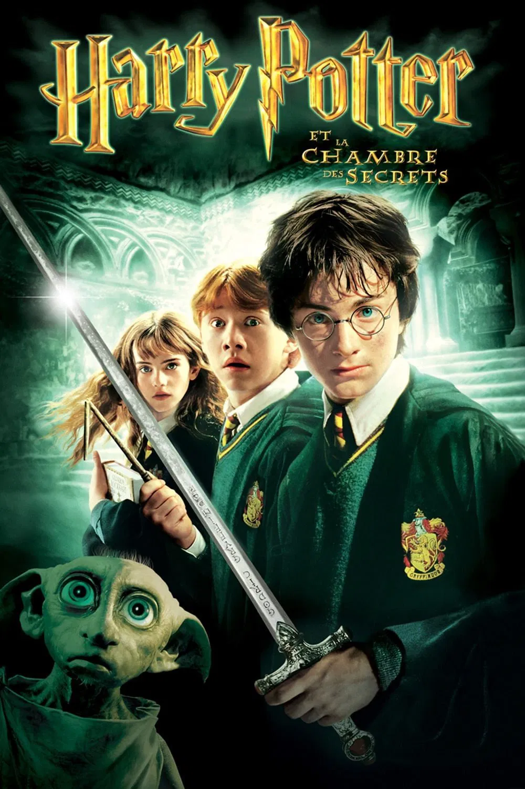
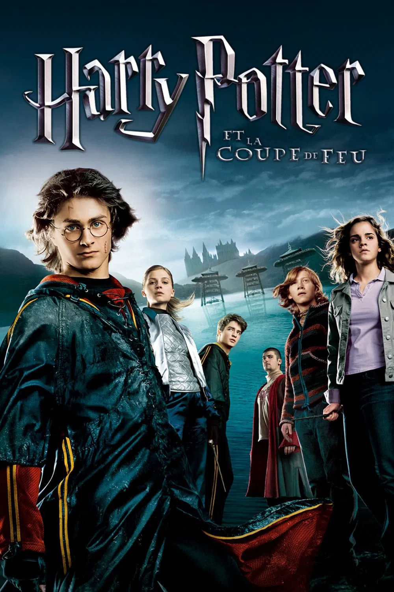
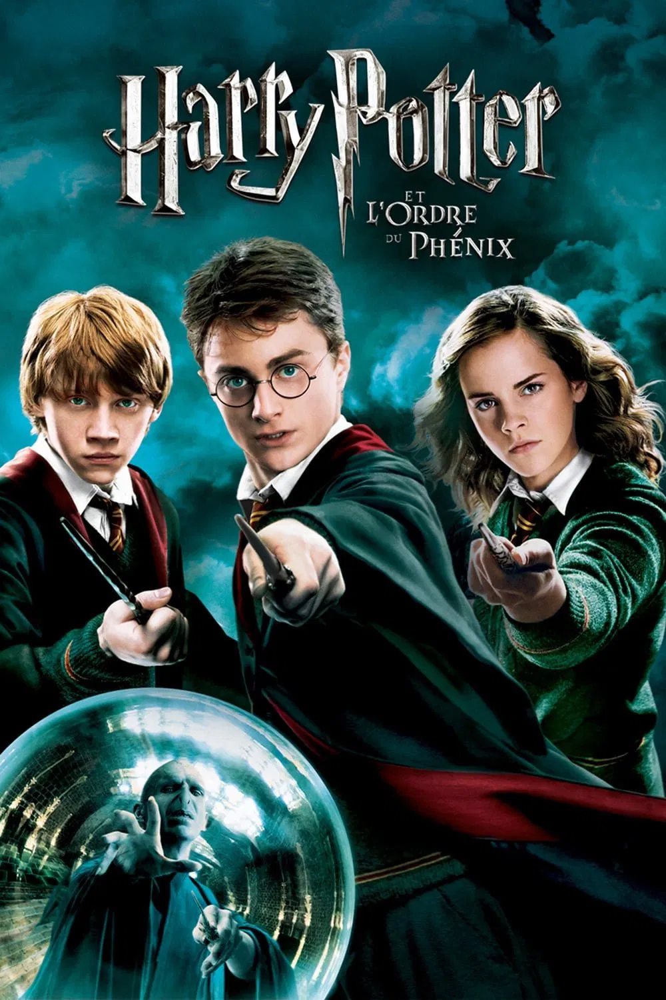
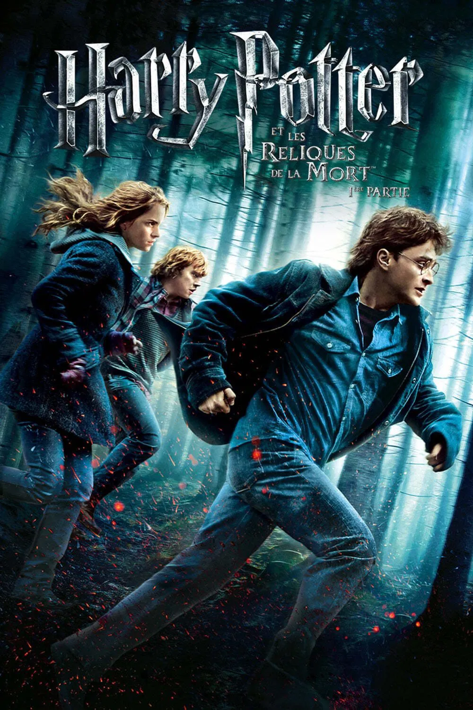
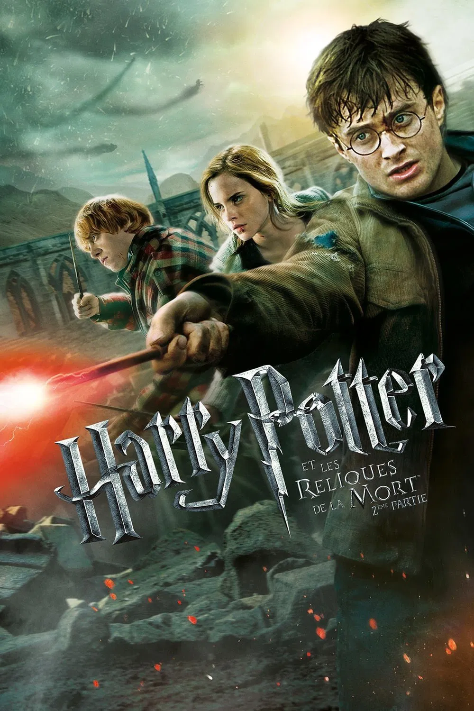

Accueil
Casting
Sortilèges
Horcruxes
Relique de la mort
Contact

Harry Potter à L'École des Sorciers
Voir le casting

Harry Potter et la Chambre des Secrets
Voir le casting
Harry Potter et le Prisonnier d'Azkaban
Voir le casting

Harry Potter et la Coupe de Feu
Voir le casting

Harry Potter et L'Odre du Phénix
Voir le casting
Harry Potter et le Prince de Sang-Mêlé
Voir le casting

Harry Potter et les Reliques de la Mort Partie 1
Voir le casting

Harry Potter et les Reliques de la Mort Partie 2
Voir le casting